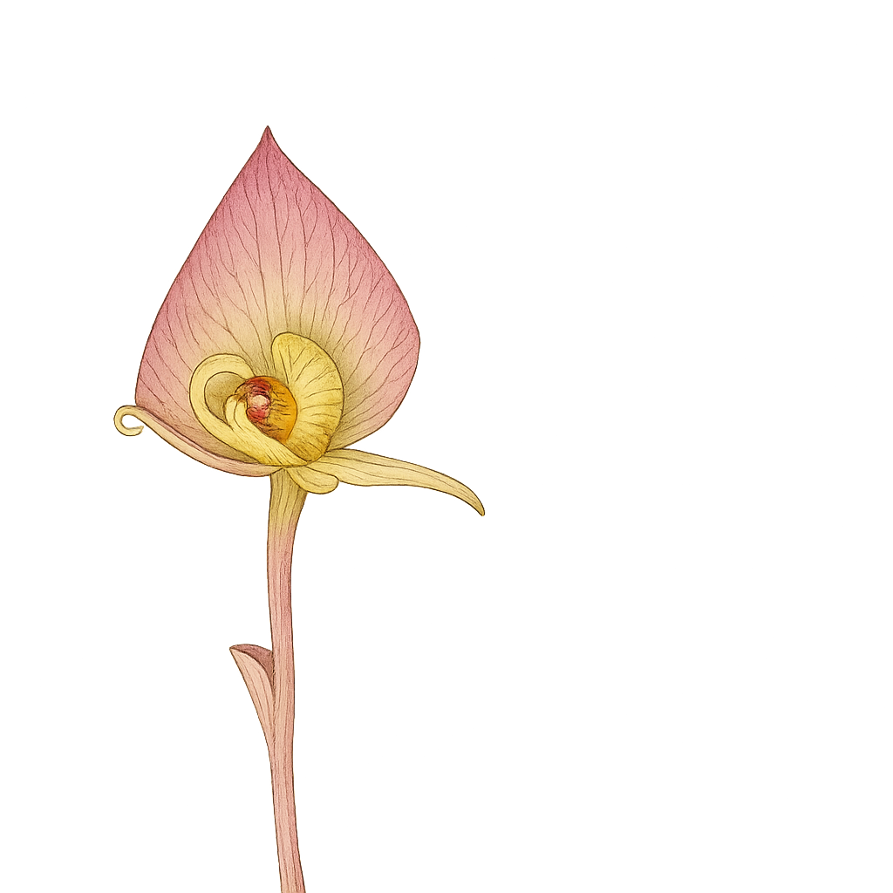

Corsiaceae
Corsia Family
Corsiaceae is a small, fascinating family of non-photosynthetic, achlorophyllous mycoheterotrophic herbs belonging to the monocot order Liliales. These plants, lacking green pigment and obtaining nutrients via symbiotic fungi, are found in damp, shaded forest floor habitats in highly disjunct regions: South America and Southeast Asia/Australasia. They are characterized by small stature, reduced scale-like leaves, and relatively large, bizarre, zygomorphic flowers typically dominated by an enlarged, hood-like upper tepal (labellum). The ovary is inferior and develops into a capsule releasing numerous dust-like seeds.
Overview
Corsiaceae belongs to the order Liliales, a major group within the Monocots. It is a very small family, comprising only about 3 genera (Corsia, Arachnitis, potentially Corsiopsis) and roughly 30 species worldwide. These plants exhibit a highly specialized lifestyle as achlorophyllous mycoheterotrophs – they completely lack chlorophyll and derive all their carbon and nutrients not through photosynthesis, but by parasitizing mycorrhizal fungi that are themselves connected to the roots of nearby photosynthetic plants. This dependence restricts them to specific habitats, typically deep shade on the forest floor in moist tropical or southern temperate regions.
The family has a remarkably disjunct distribution, occurring in two widely separated areas: southern South America (Chile, Argentina, Falkland Islands - Arachnitis) and a region spanning Southeast Asia, Malesia, New Guinea, the Solomon Islands, and northeastern Australia (Corsia, Corsiopsis). This geographical pattern suggests an ancient origin and possibly wider past distribution.
Reflecting their non-photosynthetic habit, Corsiaceae are small herbs with stems bearing only reduced, scale-like leaves. Their most striking feature is the relatively large, bizarre flower, typically borne singly at the stem apex. The flower is strongly zygomorphic (bilaterally symmetrical), dominated by one greatly enlarged, often hood-like or ornate tepal called a labellum. There are 6 stamens and an inferior ovary composed of 3 carpels, which develops into a capsule releasing countless tiny, dust-like seeds adapted for wind dispersal and initiating the crucial fungal symbiosis. Due to their rarity, specialized habitat, and unusual biology, Corsiaceae are of significant botanical and evolutionary interest.
Quick Facts
- Scientific Name: Corsiaceae Becc.
- Common Name: Corsia family (no established English common name)
- Number of Genera: Approximately 3 (Arachnitis, Corsia, Corsiopsis?)
- Number of Species: Approximately 30
- Distribution: Disjunct: S America (Chile/Arg); SE Asia, Malesia, New Guinea, NE Australia.
- Evolutionary Group: Angiosperms - Monocots - Order Liliales
Key Characteristics
Growth Form and Habit
Small, erect, perennial achlorophyllous mycoheterotrophic herbs. Plants lack chlorophyll and appear whitish, yellowish, reddish, or purplish. They obtain nutrition via mycorrhizal fungi associated with their rhizomes or tuberous roots. Stems are slender, usually unbranched.
Roots & Rhizomes
Possess underground rhizomes or tuberous roots which form symbiotic associations with mycorrhizal fungi. True absorptive roots may be reduced or absent.
Leaves
Leaves are highly reduced to small, non-photosynthetic, alternate scale-like structures appressed to or sheathing the stem. They lack stomata.
Inflorescence
Flowers are typically borne solitary and terminal on the erect stem, or sometimes in a few-flowered terminal raceme. Flowers are often nodding or held horizontally, subtended by bracts.
Flowers
Flowers are relatively large compared to the plant's overall size, intricate, strongly zygomorphic (bilaterally symmetrical), and usually bisexual (perfect). The structure is based on a 3-merous monocot plan but is highly modified.
- Perianth: Consists of 6 tepals in two indistinct whorls of 3. The single uppermost (adaxial) tepal (usually interpreted as belonging to the outer whorl) is dramatically enlarged and modified into a conspicuous, often hood-like, shield-like, or elaborately shaped labellum. This labellum often overhangs or encloses the reproductive parts and may function in pollination (e.g., insect trapping or guidance). The other 5 tepals are typically much smaller, similar to each other, and often narrow, linear, or filiform (thread-like). Perianth color is variable – white, pink, purple, brown, often with markings or veins.
- Androecium: Consists of 6 distinct (free) stamens. Filaments are short; anthers are typically extrorse (dehiscing outwards) or latrorse (dehiscing laterally).
- Gynoecium: The ovary is inferior, composed of 3 fused carpels forming a syncarpous, 1-locular ovary. Placentation is parietal, with 3 intrusive placentas bearing numerous tiny ovules. There are typically 3 distinct styles, which may be free or fused at the base, often short, each with a simple or sometimes expanded/lobed stigma.
Fruits and Seeds
The fruit is typically an erect capsule that opens by 3 valves, either apically or along its length, to release the seeds. It contains numerous, minute, dust-like seeds. This seed type is characteristic of plants dependent on mycorrhizal symbiosis for germination, as the tiny seeds lack sufficient reserves and require fungal infection to develop. The embryo is small and undifferentiated, and endosperm is minimal or absent.
Chemical Characteristics
As achlorophyllous plants, their biochemistry is fundamentally different from photosynthetic organisms, relying heavily on metabolites derived from their fungal partners. Specific chemical profiles related to defense or pollinator interactions are likely present but not broadly characterized for the family.
Field Identification
Identifying Corsiaceae requires finding these small, non-photosynthetic plants in their specific habitats and recognizing their unique floral morphology.
Primary Identification Features
- Achlorophyllous Mycoheterotrophic Habit: Small herb lacking green color (whitish, yellowish, reddish, purplish).
- Scale Leaves: Leaves reduced to small scales along the stem.
- Bizarre Zygomorphic Flower: Relatively large flower dominated by one greatly enlarged, hood-like or shield-like upper tepal (labellum).
- Inferior Ovary: Ovary located below the attachment of floral parts.
- Capsule with Dust Seeds: Fruit is a capsule releasing numerous tiny seeds.
- Specific Disjunct Distribution: Found only in S America OR SE Asia/Australasia in damp, shaded forest floor habitats.
Secondary Identification Features
- Flower usually solitary or few per stem.
- 6 distinct stamens.
- 3 distinct styles (usually).
- Other 5 tepals small and linear/filiform.
Seasonal Identification Tips
- Emergence/Flowering: Plants typically emerge and flower during rainy or humid seasons in their respective tropical or southern temperate habitats.
- Visibility: Being small, non-green, and living on the forest floor, they are easily overlooked unless specifically searched for among leaf litter. The relatively large, unusual flowers are the most striking feature.
Common Confusion Points
- Orchidaceae (Orchid Family - Mycoheterotrophic species): Some orchids (e.g., Corallorhiza, various tropical genera) are also achlorophyllous mycoheterotrophs with scale leaves and bizarre zygomorphic flowers featuring a labellum. However, orchids belong to Asparagales and differ crucially in having their single stamen (or rarely 2) fused with the style and stigma to form a unique structure called the column, and pollen aggregated into pollinia. Corsiaceae have 6 distinct stamens and 3 distinct styles.
- Burmanniaceae / Thismiaceae (Dioscoreales): Other families with achlorophyllous mycoheterotrophs. Flowers can be bizarre (Thismia) or tubular (Burmannia), but typically actinomorphic or with different symmetry, different stamen numbers/arrangements, and ovary position can vary.
- Triuridaceae (Pandanales): Tiny mycoheterotrophs with scale leaves, but flowers are unisexual, often actinomorphic with distinct tepals and carpels.
- The unique combination of Liliales affinity, 6 distinct stamens, inferior 1-locular ovary with parietal placentation, 3 styles, and the characteristic large labellum distinguishes Corsiaceae.
Field Guide Quick Reference
Look For:
- Small achlorophyllous herb (no green)
- Mycoheterotrophic (on forest floor)
- Reduced scale leaves
- Flower large, bizarre, zygomorphic
- One large hood-like tepal (Labellum)
- Other 5 tepals small, linear
- 6 distinct stamens
- Ovary inferior, 1-locular, 3 styles
- Fruit a capsule with dust seeds
- Disjunct S Am / SE Asia-Aus distribution
Key Variations:
- Labellum shape, size, color, ornamentation
- Flower solitary vs. few in raceme
- Overall plant size
- Minor floral details
Notable Examples
Corsiaceae is a small family comprising only a few genera, each adapted to a mycoheterotrophic lifestyle in specific tropical or southern temperate forest ecosystems.

Corsia species (e.g., C. ornata)
Corsia
The largest genus (~25 species) found in New Guinea, the Solomon Islands, and NE Queensland, Australia. These small herbs exhibit the characteristic features: scale leaves, solitary or few flowers per stem, and highly variable, often colourful and ornate labella which likely play a role in specific pollination mechanisms (possibly involving flies or fungus gnats).

Arachnitis uniflora
Arachnitis
A monotypic genus (or possibly two species) found in southern South America (Chile, Argentina, Falkland Islands). A small mycoheterotrophic herb with solitary, nodding flowers. The labellum is prominent but perhaps less ornate than in some Corsia, often yellowish or brownish with darker veins. It represents the South American component of the family's disjunct distribution.

Corsiaceae Flower Structure
Zygomorphy and Labellum
The flowers are strongly zygomorphic (bilaterally symmetrical), primarily due to the modification of the uppermost tepal into a large, often hood-like or shield-like labellum. The other five tepals are typically small and linear. Inside are 6 distinct stamens and an inferior ovary topped by 3 styles.

Corsiopsis chinensis (?)
Corsiopsis
A third genus, Corsiopsis, with a single species described from China. Its exact relationship and status within or near Corsiaceae have sometimes been questioned or require further confirmation, but it shares the mycoheterotrophic habit and some floral features.
Phylogeny and Classification
Corsiaceae is placed within the monocot order Liliales. This order includes familiar families like Liliaceae (lilies), Colchicaceae (autumn crocus), and Smilacaceae (greenbriers). Corsiaceae represents a highly specialized lineage within this order that has completely lost the ability to photosynthesize and evolved a mycoheterotrophic lifestyle.
Molecular phylogenetic studies using DNA sequence data place Corsiaceae firmly within Liliales. Its exact position can vary slightly between analyses, but it is often found to be closely related to, or sister to, the small family Campynemataceae (another Southern Hemisphere family, but photosynthetic) or near Petermanniaceae (a monotypic Australian vine family). It represents a fascinating example of extreme morphological modification driven by a shift in nutritional strategy within a major monocot order.
Position in Plant Phylogeny
- Kingdom: Plantae
- Clade: Angiosperms (Flowering plants)
- Clade: Monocots
- Order: Liliales
- Family: Corsiaceae
- (Phylogenetic Position: Within Liliales, near Campynemataceae)
Evolutionary Significance
Corsiaceae is evolutionarily significant primarily because:
- Convergent Evolution of Mycoheterotrophy: It represents an independent evolution of complete dependence on fungal symbionts for nutrition within the Monocots (specifically Liliales), showcasing parallel adaptations (loss of chlorophyll, scale leaves, dust seeds) seen in unrelated mycoheterotrophic lineages (e.g., in Dioscoreales, Pandanales, Orchidales, Ericales).
- Extreme Floral Specialization: The development of the highly modified, zygomorphic flower with a dominant labellum suggests intricate co-evolution with specific pollinators (likely small insects like flies or fungus gnats) in shaded forest floor environments.
- Liliales Diversity: Adds to the understanding of the range of morphological and ecological diversity within the Liliales order, traditionally known for showy geophytes.
- Biogeography: The striking South America vs. SE Asia/Australasia disjunct distribution pattern provides important data points for reconstructing the historical biogeography of monocots and angiosperms generally, suggesting ancient origins potentially related to Gondwanan fragmentation or long-distance dispersal.